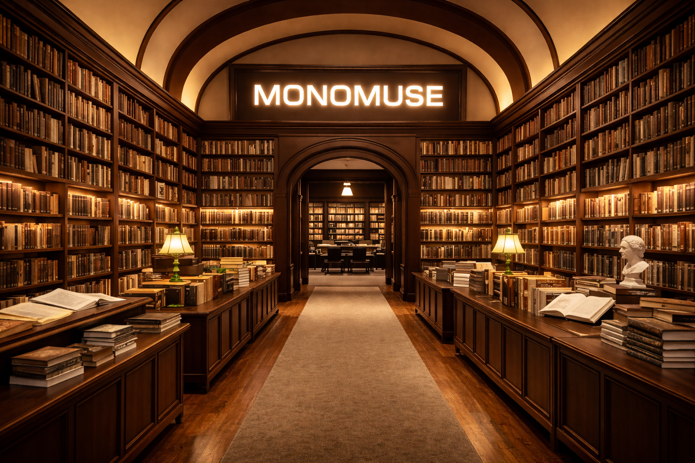

Welcome to Monomuse Museum!
Monomuse is a museum dedicated to famous books and works. We have all types of books and strive to ensure no book gets left behind. As you explore, you'll find titles you've never seen before.

Mission Statement
At Monomuse, our mission is to celebrate the written word by preserving, showcasing, and sharing the world's most remarkable books and literary works — ensuring every story, no matter how rare or forgotten, finds its audience.
Milestones
- 1990: Monomuse founded by a group of book enthusiasts with a vision to create a unique museum experience.
- 2020: Monomuse founded with a collection of 10,000 books.
- 2021: First public exhibition, "The Lost Classics," attracts 50,000 visitors.
- 2022: Launch of the "Rare Reads" digital archive, making 5,000 rare books accessible online.
- 2023: Partnership with local schools to promote literacy and book appreciation among students.